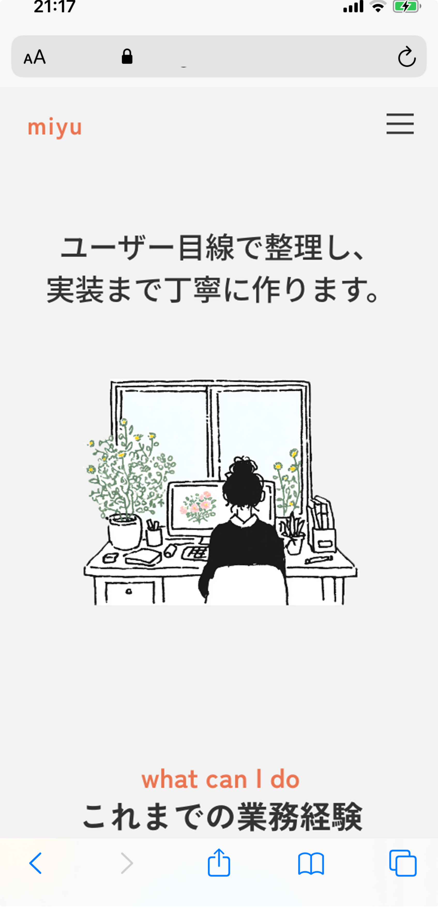
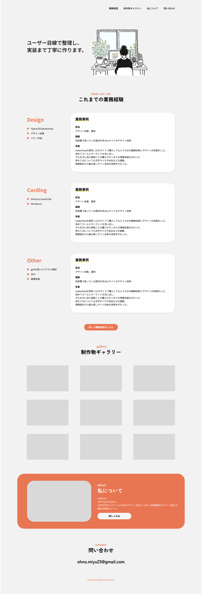
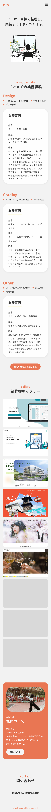

works
ポートフォリオサイト



目的：採用担当の方にスキルや人柄を知ってもらい興味を持ってもらう
ターゲット：企業採用担当者
- Figmaで作成したデザインをClaudeCodeと連携し、VScodeでコーディング。Githubで管理。
- デザイン性よりも見やすさを重視
ページ構成
- MV：強みを一言でわかりやすく
- 業務経験：トップページでスキル感がマッチしていると感じていただけたら詳しい職務経歴ページへ飛ばす
- 制作物ギャラリー：パッと見て制作物がわかるグリッド
- 私について：スキルがマッチしていたらプラスで人柄がわかるようプロフィールを掲載
- 問い合わせ：連絡用メールアドレス

point1
多くのポートフォリオを見る中でスムーズに見れる動線を意識
point2
デザインセンスよりも使いやすさを考慮できることを押す
point3
余白は広め、色数は最低限にしてシンプルに
